Коллекция Белые Грибы
Ангус, Ангус Пита, Биг Кинг и Воппер с соусом Белые грибы: ингредиенты, сборка, упаковка и тренажёр.
Кто ты в ресторане?
От должности зависит, какие главы откроются и какой тренажёр ты пройдёшь.
На какой позиции работаешь?
Выбери должность — ниже появится список глав.
Что в курсе
Ингредиенты
В линейке два новых ингредиента: соус Белые грибы и грибы жареные. Разберём, в какой инвентарь заливают соус, сколько хранятся оба ингредиента и как разогреть грибы перед выкладкой на борт.
Соус Белые грибы
Соус готовят по тем же правилам, что и другие соусы, — по стандартам качества продукции.
Чистый и сухой инвентарь
Тубу собирай только из чистых и сухих деталей.
FIFO
«Первым пришёл — первым ушёл»: сначала в работу идёт соус, который приготовили раньше.
Маркировка
На сливсе и на тубе — наклейка со временем приготовления и сроком годности.
Если что-то не получается, открой алерт «Маркировка продукта сроком годности».
Туба, пистолет и наклейка
Соус Белые грибы заливают в тубу, тубу ставят в пистолет-дозатор с жёлтой ручкой 1/4 Z.
Туба в разобранном виде:
Чтобы не перепутать соусы, наклей стикер «Белые грибы» на подставку и на пистолет.
Сколько хранится соус
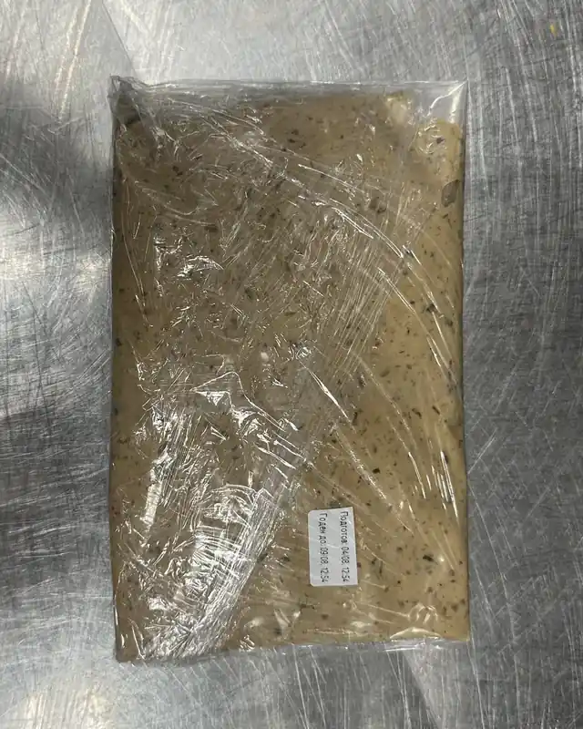
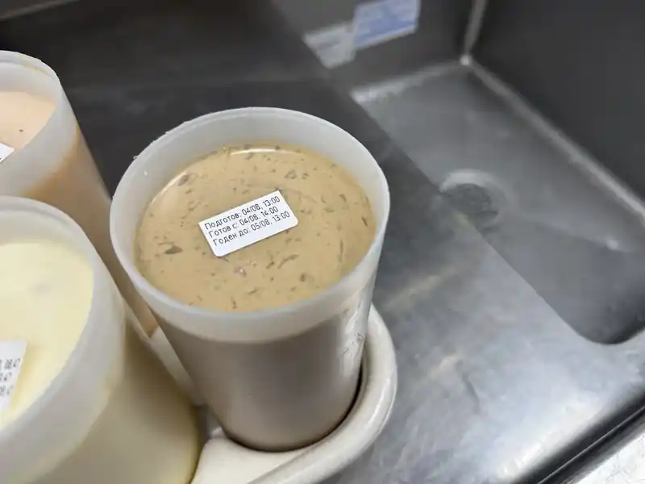
Грибы жареные
Грибы сначала дефростируют, а перед выкладкой на борт обязательно разогревают. Дефростация и хранение — в холодильной камере при +1…+4 °C.
Общий срок хранения — 42 часа
6 часов грибы дефростируются, потом хранятся ещё 36 часов. И то и другое — при +1…+4 °C.
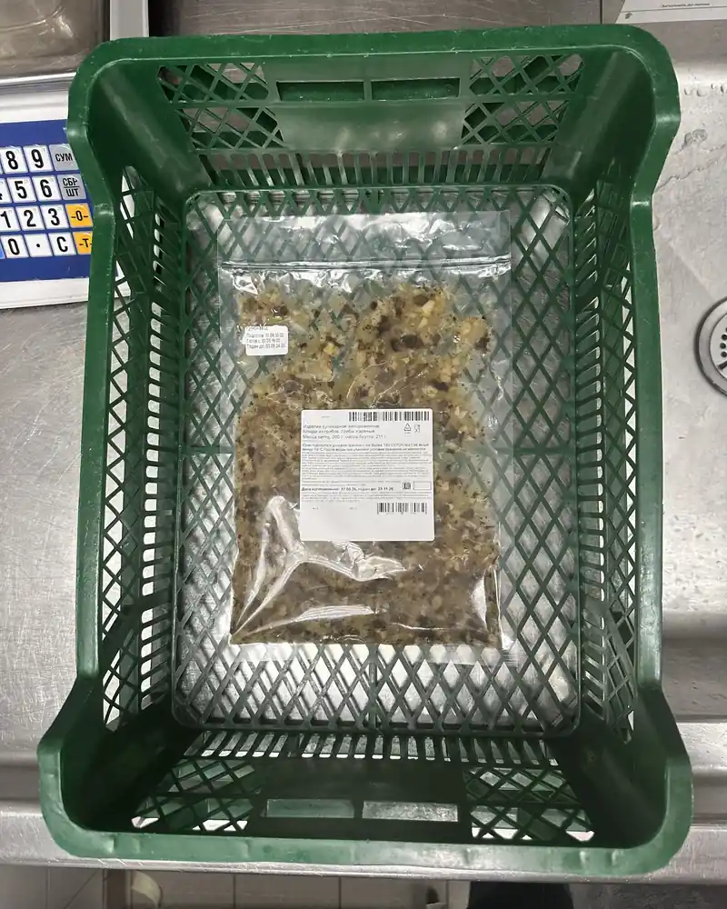
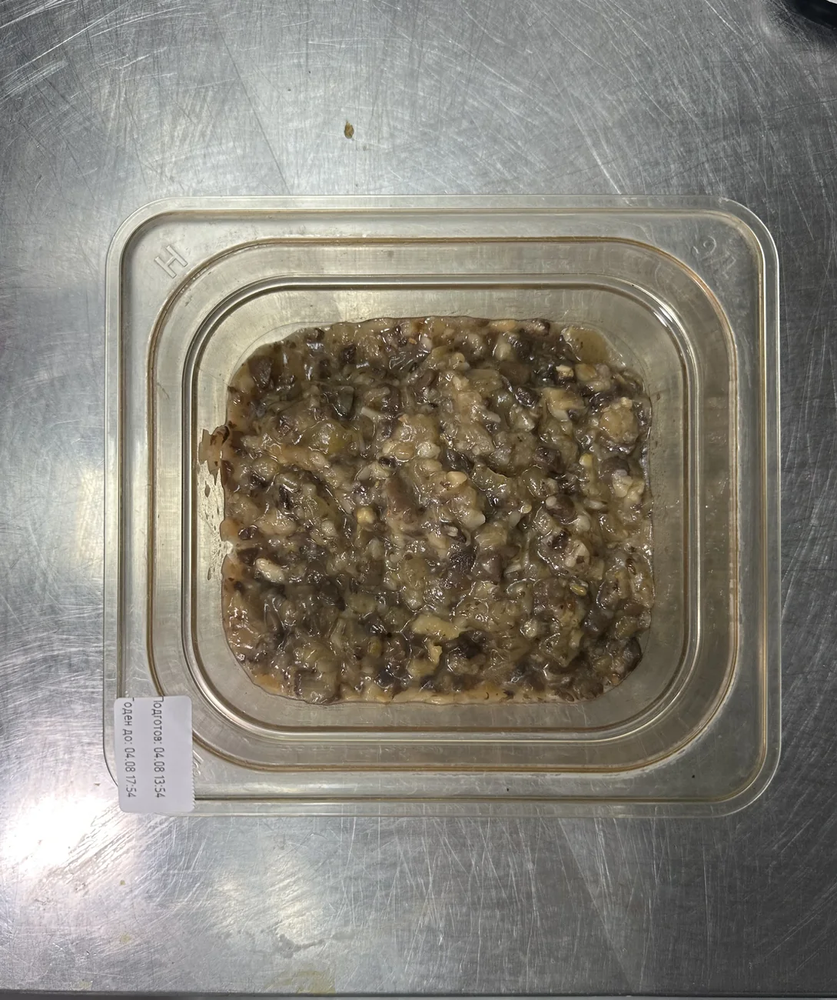
Разогрев перед выкладкой на борт
-
1
Пэн без крышки — в микроволновку
Нажми кнопку 5 — это 11 секунд.
-
2
Перемешай мерной ложкой
После каждого цикла — чтобы грибы прогрелись равномерно.
-
3
Второй цикл — если грибов 101–200 г
Снова кнопка 5 и снова перемешай.
Для 50–100 г этот шаг не нужен -
4
Поставь на борт
Пэн с грибами — на борт, вместе с ложкой.
Пять вопросов о соусе и грибах
Кнопка откроется, когда ответишь на все вопросы.
Приготовление
Четыре блюда коллекции Белые Грибы. У каждого — видео сборки, шпаргалка по слоям и своя упаковка.
Ангус Белые грибы
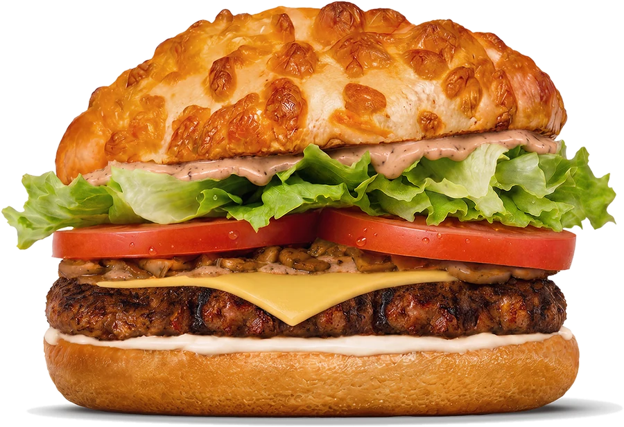
Сочный бифштекс из мраморной говядины Ангус Абердин и жареные белые грибы дополнили сыром Чеддер, свежим Айсбергом и сочными томатами. Всё собрали на мягкой сырной булочке, а новый соус с насыщенным вкусом белых грибов объединил все ингредиенты в яркое сочетание.
- Соус Белые грибы 3 нажатия
- Салат Айсберг 14 г · щепотка в 4 пальца
- Томаты 2 ломтика
- Грибы жареные 2 ложки · 40 г
- Соус Белые грибы 1 нажатие
- Сыр Чеддер 1 ломтик
- Котлета Ангус гриль вверх
- Майонез 2 нажатия
Кламшелл Ангус
Кламшелл Ангус, клапан «Сезонный».
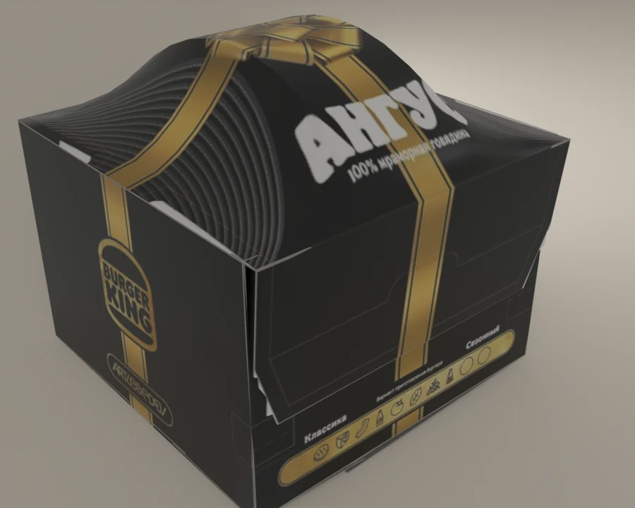
Биг Кинг Белые грибы
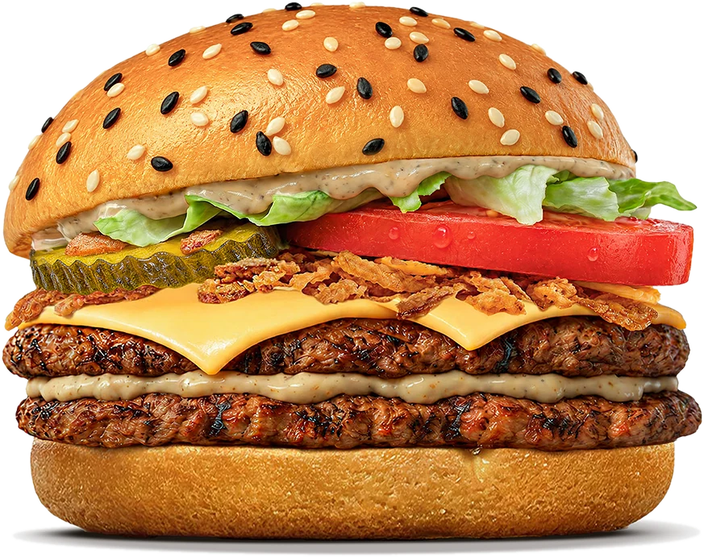
Две сочные говяжьи котлеты, два ломтика сыра Чеддер, свежий Айсберг, сочный томат, хрустящий лук фри и маринованные огурчики собрали в мягкой картофельной булочке. Новый соус с насыщенным вкусом белых грибов объединил начинку в яркое сочетание.
- Соус Белые грибы 2 нажатия
- Салат Айсберг 10 г · щепотка в 3 пальца
- Томат 1 ломтик
- Хрустящий лук 1 ложка · 9,8 г
- Маринованный огурец 1 ломтик
- Сыр Чеддер 2 ломтика
- Котлета Гамбургер гриль вверх
- Соус Белые грибы 1 нажатие
- Котлета Гамбургер гриль вверх
Коробка Биг Кинг
Потяни коробку пальцем или мышкой, чтобы рассмотреть её со всех сторон.
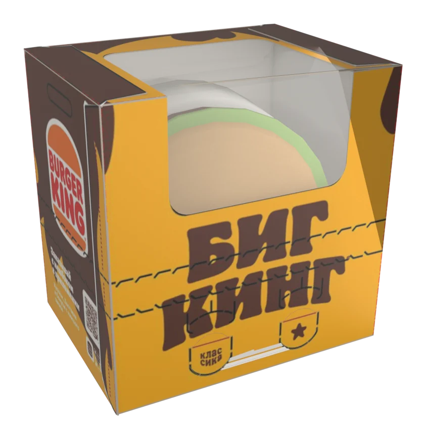
Ангус Пита Белые грибы
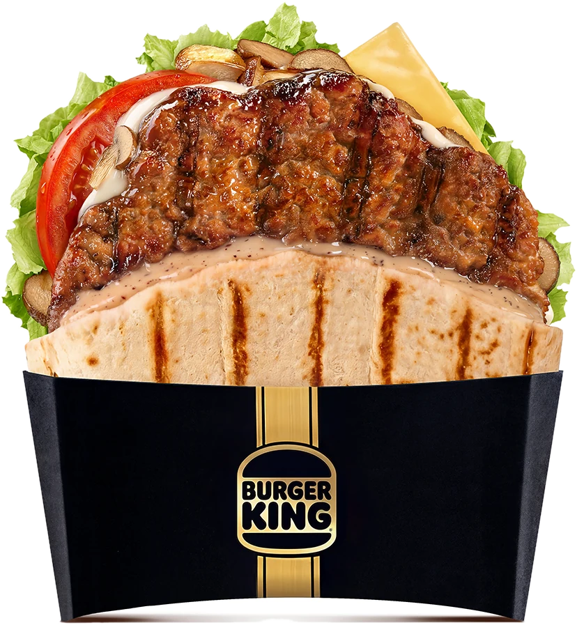
Сочный бифштекс из мраморной говядины Ангус и жареные белые грибы завернули в румяную тортилью вместе с сыром Чеддер, свежим Айсбергом и сочными томатами. Новый соус с насыщенным вкусом белых грибов объединил начинку и сделал сочетание ещё насыщеннее.
- Соус Белые грибы 3 нажатия
- Салат Айсберг 14 г · щепотка в 4 пальца
- Томат 1 ломтик
- Грибы жареные 2 ложки · 40 г
- Сыр Чеддер 1 ломтик
- Котлета Ангус гриль вверх
- Майонез 2 нажатия
Упаковка питы
Упаковка питы, клапан «Сезонный».
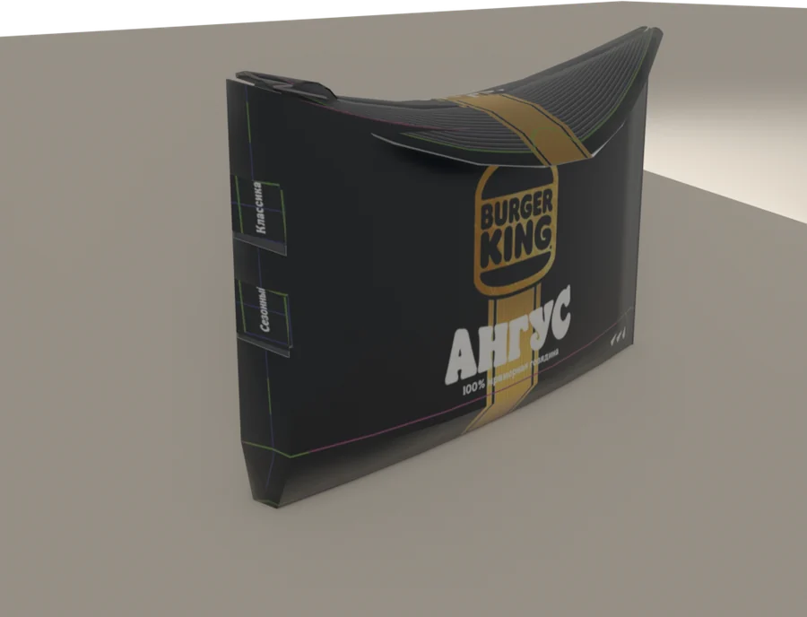
Воппер Белые грибы
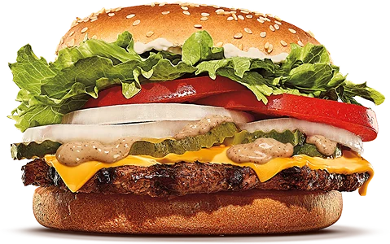
Воппер с соусом Белые Грибы. Один Воппер — 6 новых вкусов. Выбери соус и пробуй! Воппер с соусом Белые Грибы — 100% говядина на огне, свежий салат, сочный помидор, лук и хрустящие огурчики — всё с новым соусом с кусочками белых грибов. Сытно и по-настоящему вкусно!
Воппер с сыром с соусом Белые Грибы. Один Воппер — 6 новых вкусов. Выбери соус и пробуй! Воппер с сыром с соусом Белые Грибы — 100% говядина на огне, сыр Чеддер, свежий салат, сочный помидор, лук и хрустящие огурчики — всё с новым соусом с кусочками белых грибов. Сытно и по-настоящему вкусно!
- Майонез 3 нажатия
- Салат Айсберг 14 г · 4 пальца
- Томаты 2 ломтика
- Лук свежий
- Соус Белые грибы 2 нажатия
- Огурец маринованный 4 ломтика
- Котлета Воппер гриль вверх
Если забыл рецепт классического Воппера, можешь посмотреть видео сборки.
Покрути упаковку сам
Потяни коробку пальцем или мышкой. Нажми на клапан — он продавится, как на станции.
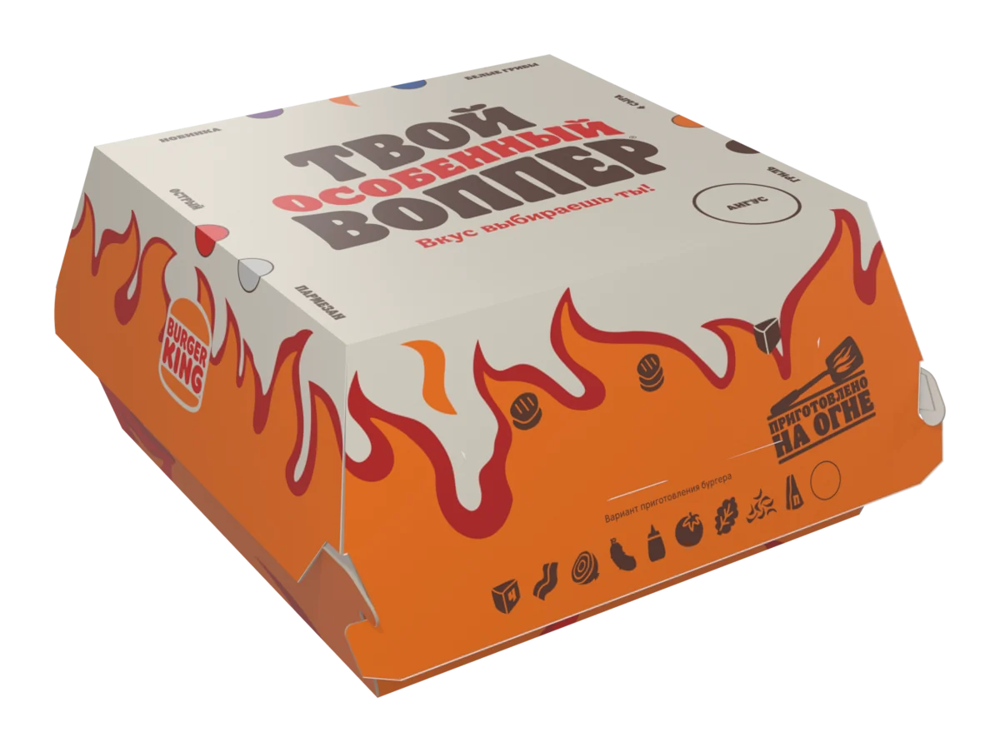
Упаковка ролла
Упаковка Воппер Ролла. Покрути её и найди клапаны.
Какую упаковку брать
Упаковки называются одинаково — «Твой особенный Воппер». Отличаются только клапаны вкуса. А вот правило перехода у Воппера и ролла разное.
Сначала срабатываем текущую
Пока текущая упаковка не закончилась, упаковывай в неё. Закончилась — переходишь на новую.
Приехала новая — работаем с ней
Пока новой упаковки в ресторане нет, упаковывай в текущую. Как только новая приехала — берёшь только её.
Воппер: пока текущая упаковка не закончилась — берём её и отмечаем «Вкус сезона», потом переходим на новую с клапаном «Белые грибы». Воппер Ролл: как только новая упаковка приехала в ресторан — работаем только с ней.
Кнопка откроется, когда разберёшь все ситуации.
Кнопка откроется, когда разберёшь все четыре блюда.
Тренажёр
Тренажёр — под позицию, которую ты выбрал в начале курса.
Твой тренажёр
Кнопка откроется, когда пройдёшь тренажёры своей роли.
Курс пройден!
Коллекция Белые Грибы, упаковка и тренажёр — позади. Проверь свои результаты и нажми «Завершить курс».
Кнопка передаёт в LMS статус «Пройден».
Чтобы завершить курс, пройди тренажёры своей роли.